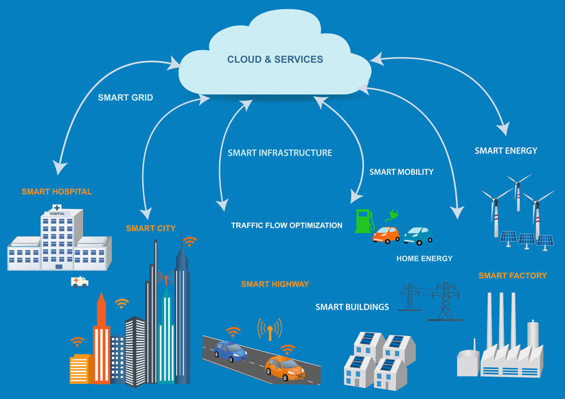
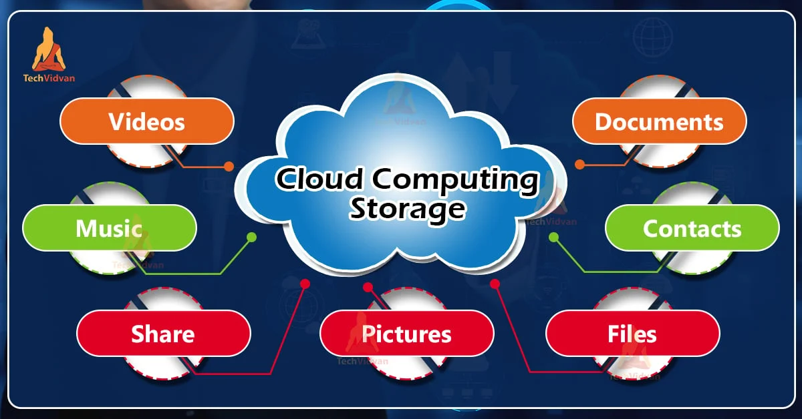

What is Cloud Computing?
Cloud Computing is a web-related technology that delivers computing services over the internet. Instead of storing files only on a personal computer or running all software locally, users can access storage, applications, and processing power through remote servers. This makes technology more flexible and convenient because users can connect from different devices and locations.
The purpose of Cloud Computing is to make computing resources easier to access, more scalable, and more cost effective. Businesses use cloud services to host websites, store company data, and support online collaboration. Students and everyday users also depend on cloud systems when they use online drives, video streaming, email platforms, and shared documents.
Cloud Computing grew quickly because internet speeds improved and organisations needed more reliable digital services. It has changed the way software is delivered and how data is managed. Today, it is considered a key part of modern web infrastructure.
Key Features
- Access to services through the internet
- Scalable storage and computing power
- Support for collaboration across devices
- Flexible pricing for users and businesses
- Automatic updates and easier maintenance
Service Models
- Infrastructure as a Service (IaaS)
- Provides virtual servers, storage, and networking resources.
- Platform as a Service (PaaS)
- Provides a platform for developers to build and deploy applications.
- Software as a Service (SaaS)
- Provides ready-to-use software through a browser or online service.
Comparison with Related Technologies
| Technology | Main Purpose | Difference |
|---|---|---|
| Cloud Computing | Deliver services over the internet | Focuses on remote access to computing resources |
| Local Computing | Use hardware and software on one machine | Depends more on personal device resources |
| Edge Computing | Process data closer to users/devices | Reduces delay by moving some processing away from central clouds |
Growth and Future
Cloud Computing has grown because organisations want fast deployment, lower hardware costs, and easier maintenance. It is expected to continue growing as artificial intelligence, big data, and remote work become more common. In the future, cloud systems may become more secure, more efficient, and more closely connected with edge technologies and automation tools.

